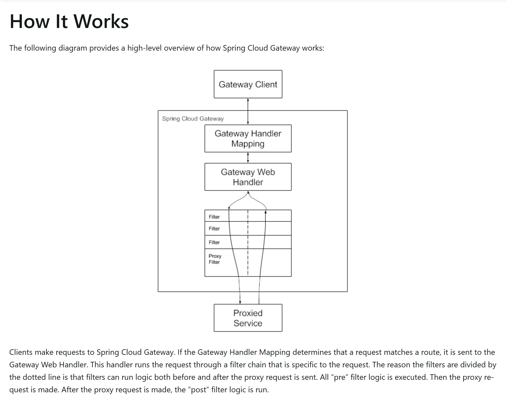
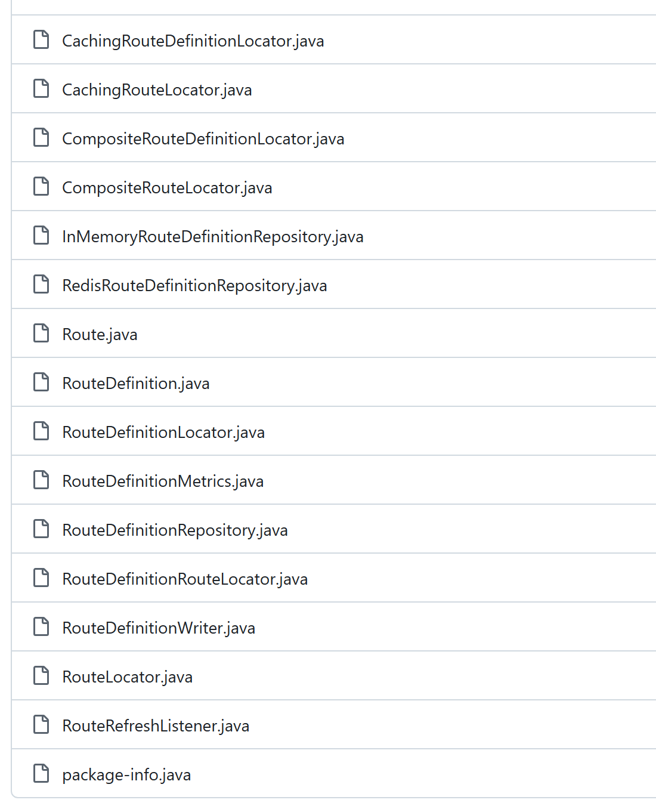

OSS PROJECT INTRO · SPRING CLOUD GATEWAY 系列第 5 期：架构与源码导读（收官）
上一期我们把统一入口的"三板斧"——认证、限流、动态路由——串成了一个完整实战。本期是 Spring Cloud Gateway 系列的收官：不写任何配置，走进 spring-cloud/spring-cloud-gateway 仓库，把前四期讲过的每个概念落到真实的类和调用链上。本期你带走三样东西：一张读码路线图（一条 HTTP 请求在网关源码里的完整旅程，从 DispatcherHandler 进、过滤器链走、Netty 转发出）、三个设计决策的来龙去脉（路由即数据、一条链的两半、配置化工厂生态，每个都讲清"为什么这么设计、解决什么问题、换种做法会怎样"）、外加一个属性袋的传递思路。屏幕上出现的每个目录和类，路径都核对自源码 tag v5.0.3，不是凭记忆写的。
读码第一步是钉版本、认地图。SCG 的仓库在 5.0 世代做了模块拆分，本系列前几期说的"两个 starter 别拿错"，根源就在仓库布局上。以下顶层目录逐条核对自 tag v5.0.3（2026-09-19）：
spring-cloud/spring-cloud-gateway @ v5.0.3 · 顶层目录
spring-cloud-gateway-server-webflux 响应式网关主模块（本系列主角，读码主战场）
spring-cloud-gateway-server-webmvc Servlet 形态：同一套路由模型跑在 Tomcat 栈
spring-cloud-gateway-server 两形态共用的配置元数据（无 Java 源码）
spring-cloud-gateway-proxyexchange-* ProxyExchange 工具（webflux / webmvc 各一）
spring-cloud-starter-gateway-server-* 两个起步器（webflux / webmvc 各一）
spring-cloud-gateway-sample 示例工程
spring-cloud-gateway-integration-tests 跨形态集成测试
spring-cloud-gateway-dependencies BOM 依赖管理
docs 参考文档源（docs.spring.io 的内容出自这里）主战场只有一处：spring-cloud-gateway-server-webflux/src/main/java/org/springframework/cloud/gateway/。这个包下面再分家：handler/ 管"请求进来先到哪"，route/ 管"路由怎么定义、怎么加载"，filter/ 管"转发前后做什么加工"——正好对应心智模型的三步：匹配路由 → 装配链 → 执行链。本期三个设计决策，一个包一个。
先看终点长什么样。一条 HTTP 请求打到网关端口后，在源码里的完整旅程如下（每一站都标了类名，全部位于 org.springframework.cloud.gateway 包或 Spring WebFlux 框架层）：
前三站（HttpWebHandlerAdapter、DispatcherHandler）是 Spring WebFlux 框架的地基，不属于网关代码——网关自己的第一个类是 RoutePredicateHandlerMapping。官方《How it works》的定义原话："If the Gateway Handler Mapping determines that a request matches a route, it is sent to the Gateway Web Handler. This handler runs the request through a filter chain that is specific to the request."——Handler Mapping 判定匹配，交给 Web Handler，穿过一条"为这个请求定制"的过滤器链。这句话里的三个名词，就是下面三节的三个主角。

官方参考文档《How it works》实拍：客户端请求 → Gateway Handler Matching（匹配路由）→ Gateway Web Handler → 过滤器链（虚线分隔 pre 与 post）→ 代理请求到目标服务（docs.spring.io，5.0.3，2026-09-19 截图）。读码入口就一个方法。handler/RoutePredicateHandlerMapping.java 里的 lookupRoute，它回答"怎么找到匹配路由"（摘自 tag v5.0.3，L131-147 节选）：
protected Mono<Route> lookupRoute(ServerWebExchange exchange) {
return this.routeLocator.getRoutes().filterWhen(route -> {
// 把"正在试哪条路由"记进属性袋，断言异常时能定位
exchange.getAttributes().put(GATEWAY_PREDICATE_ROUTE_ATTR, route.getId());
try {
return route.getPredicate().apply(exchange);
}
catch (Exception e) { logger.error(...); }
return Mono.just(false);
}).next(); // 取第一条命中的路由三行读出三层信息。第一，路由的来源是个流：routeLocator.getRoutes() 返回 Flux<Route>，路由不是存在 Map 里等查询，而是一条可以随时变换的数据流。第二，匹配就是逐条试断言：filterWhen 把每条路由的断言拿到请求上执行，next() 取第一条命中的——路由的 order 顺序就是优先级，先匹配先赢。第三，命中的路由放属性袋：后续所有环节都从属性袋取路由，不再重复匹配。路由对象从哪来？route/RouteDefinitionRouteLocator.java 的 convertToRoute（L131-135）给出答案：
private Route convertToRoute(RouteDefinition routeDefinition) {
AsyncPredicate<ServerWebExchange> predicate = combinePredicates(routeDefinition);
List<GatewayFilter> gatewayFilters = getFilters(routeDefinition);
return Route.async(routeDefinition).asyncPredicate(predicate)
.replaceFilters(gatewayFilters).build();
}
源码route/ 目录实拍（tag v5.0.3，2026-09-19 截图，github.com/spring-cloud/spring-cloud-gateway）：RouteDefinition（配置态）与 Route（运行态）分家，中间由 RouteDefinitionRouteLocator 转换；CachingRouteLocator 提供缓存，RouteDefinitionWriter/InMemoryRouteDefinitionRepository 支撑运行期动态增删路由。
现在回答钩子的问题：网关为什么敢把路由当数据？因为"路由的定义"（RouteDefinition：id、uri、断言参数、过滤器参数，全是字符串和数字）和"路由的运行时对象"（Route：编译好的断言、过滤器实例）被拆成两个世界，中间隔着 convertToRoute 这道转换工序。配置态是纯数据——所以它可以来自 yml、来自注册中心（DiscoveryClientRouteDefinitionLocator）、来自 actuator 端点的运行期写入，甚至来自数据库（仓库里有 RedisRouteDefinitionRepository 现成参考）。解决什么问题：路由增删改不需要重新编译、不需要重启，第 4 期"改一下 Nacos 配置路由就生效"的动态路由，源码依据就是这一层。换种做法会怎样：路由写成 Java 代码（第 2 期见过的 DSL），规则能写测试、有类型检查，但每次调整都要走"编译—打包—发布"流水线，动态路由无从谈起。SCG 的取舍是：运行态用代码（性能与灵活性兼得），定义态用数据（可配置、可推送、可热更），两边各取所长。
第二个入口是 handler/FilteringWebHandler.java。第 3 期讲过"全局过滤器 GlobalFilter 作用于所有路由，GatewayFilter 只挂在单条路由上"，这两套怎么协作？答案是：在网关眼里它们其实是同一种东西（摘自 tag v5.0.3，L99-124 节选）：
public Mono<Void> handle(ServerWebExchange exchange) {
Route route = exchange.getRequiredAttribute(GATEWAY_ROUTE_ATTR); // 从属性袋取路由
List<GatewayFilter> combined = getCombinedFilters(route);
return new DefaultGatewayFilterChain(combined).filter(exchange);
}
protected List<GatewayFilter> getAllFilters(Route route) {
List<GatewayFilter> combined = new ArrayList<>(this.globalFilters);
combined.addAll(route.getFilters()); // 路由内过滤器接在全局过滤器后面
AnnotationAwareOrderComparator.sort(combined); // 按 order 统一排序
return combined;
}全局过滤器被 GatewayFilterAdapter 包了一层，再跟命中路由自带的过滤器合并、按 order 排序，成了一条链。为什么这么设计：把"对所有请求生效的基础能力"（转发、负载均衡、写回响应、指标）跟"对单条路由生效的业务策略"统一成同一种执行单元，链的推进逻辑只需写一遍。解决什么问题：避免两套过滤器、两套执行模型并存——想想如果 pre 一套接口、post 一套接口、全局和路由各一套，组合状态会爆炸。换种做法会怎样：祖辈 Zuul 就是反例，它把过滤器分成 pre / route / post 三种类型各自排队，类型之间的数据传递和错误处理都要额外约定；SCG 只有一条链，"类型"退化成链上的位置。
这条链最精妙的地方是pre 和 post 的对称性。看转发过滤器 NettyRoutingFilter 的收尾（摘自 tag v5.0.3，L202）：
return responseFlux.then(chain.filter(exchange));
// responseFlux：把请求发往下游、拿到响应头（pre 阶段的终点）
// .then(...) ：下游响应就绪后，才继续执行链上剩下的过滤器（post 阶段的起点）响应式链里没有"调用返回"这回事，所谓 post 逻辑，就是写在 chain.filter(exchange).then(...) 后面的那段 Mono——pre 和 post 是同一条链的两半，中间隔着一次真正的网络转发。过滤器想加工响应头，把代码放在 then 后面即可；想加工请求，放在 chain.filter 调用之前即可。这跟第 0006~0010 期读过的 Netty Pipeline 是同族思路：一条双向链，出站入站各走各的半程，但共享同一个上下文。
前四期你反复在写 Path=/api/**、AddRequestHeader=Hello, World 这样的短配置——等号左边一个名字、右边一堆参数，这是怎么变成 Java 对象的？答案是两个工厂接口的"Name + Config"模式（摘自 handler/predicate/RoutePredicateFactory.java，tag v5.0.3，L71-75）：
@FunctionalInterface
public interface RoutePredicateFactory<C> extends ShortcutConfigurable, Configurable<C> {
Predicate<ServerWebExchange> apply(C config); // 配置对象 → 断言实例
default String name() { // 类名去掉 RoutePredicateFactory 后缀 = 配置名
return NameUtils.normalizeRoutePredicateName(getClass());
}
}规矩一共三条。第一条，名字从类名来：类叫 PathRoutePredicateFactory，配置里就能写 Path=...；GatewayFilterFactory 同理。第二条，配置变对象、对象变断言/过滤器：RouteDefinitionRouteLocator 拿到配置里的名字去工厂注册表按名查找，把参数绑定成泛型 C 类型的配置对象，再调 apply(config) 造出断言或过滤器实例——这正是决策一里 convertToRoute 干的活。第三条，多条件自动 and：combinePredicates 用 reduce(..., AsyncPredicate::and) 把一条路由的多个断言串成组合断言。
为什么这样能长出生态：社区要加一种匹配方式或一个过滤器，只需新增一个实现类——一个类自带三样东西：名字（配置入口）、配置类（参数 schema）、apply（行为）。不用改任何框架代码，Spring 容器收集所有工厂 Bean，RouteDefinitionRouteLocator 构造函数里 forEach(factory -> put(factory.name(), factory)) 就收编完毕。这是"微核 + 插件"结构在过滤器场景的教科书实现。换种做法会怎样：用一个大 switch 按字符串分发，每加一种能力都要改核心类、重新发版，社区贡献只能以 patch 形式挤进主干——生态扩张速度会慢一个数量级。规模用数字说话（自 tag v5.0.3 源码清点）：handler/predicate 包 20 个 Java 文件、filter/factory 包 73 个 Java 文件，断言 + 过滤器工厂合计几十个开箱即用，而支撑这一切的核心接口只有两个。
把镜头拉回路线图：Handler Mapping 找到的路由、断言试到哪条、转发目标 URL、下游原始响应……这些中间信息都存在哪？答案是一个看起来平平无奇的 Map：ServerWebExchange 的 getAttributes()。常量都定义在 support/ServerWebExchangeUtils.java（tag v5.0.3，L96-117 节选）：
public static final String GATEWAY_ROUTE_ATTR = qualify("gatewayRoute");
public static final String GATEWAY_REQUEST_URL_ATTR = qualify("gatewayRequestUrl");
public static final String GATEWAY_ORIGINAL_REQUEST_URL_ATTR = qualify("gatewayOriginalRequestUrl");
public static final String GATEWAY_HANDLER_MAPPER_ATTR = qualify("gatewayHandlerMapper");
public static final String GATEWAY_PREDICATE_ROUTE_ATTR = qualify("gatewayPredicateRouteAttr");这条链上的接力赛是这样的：RoutePredicateHandlerMapping 放进 GATEWAY_PREDICATE_ROUTE_ATTR（正在试哪条）和 GATEWAY_ROUTE_ATTR（命中哪条）；RouteToRequestUrlFilter 放进 GATEWAY_REQUEST_URL_ATTR（改写后的转发目标）；NettyRoutingFilter 放进 CLIENT_RESPONSE_ATTR（下游原始响应），让排在它后面的 NettyWriteResponseFilter 拿去写回客户端。为什么用属性袋而不是显式参数：过滤器链的接口是固定的 filter(exchange, chain)，几十个过滤器各取所需，如果每个中间产物都走函数签名，接口就得天天改；属性袋让链上每一站"用得到就取，用不到不感知"，排障时还顺手——第 2 期开过的 DEBUG 日志，输出的正是这些属性的变化。代价与纪律：属性袋是无类型 Map，拼写错了编译器不管，所以网关把它收在 ServerWebExchangeUtils 一个类里、用 qualify() 统一前缀。借鉴到自己项目：上下文对象可以"轻"，但 key 必须集中管理、有唯一前缀。
可借鉴点三则：
then() 衔接，链上任何一环写了阻塞调用（同步数据库、Thread.sleep），堵住的不是自己一个请求，而是整个事件循环的 Worker 线程——用响应式网关，全链路的依赖都得是非阻塞的，这是第 2 期"加了 starter-web 网关就失效"那条红线的深层原因。读码路线图收个尾：想继续深挖，就从 handler/RoutePredicateHandlerMapping 进，顺 lookupRoute → convertToRoute → handle → DefaultGatewayFilterChain 走一遍，再按兴趣分叉——限流看 filter/ratelimit/（第 0059 期实战里配的 Redis 令牌桶，实现就是 RedisRateLimiter），动态路由看 route/InMemoryRouteDefinitionRepository，WebMVC 形态的差异看 spring-cloud-gateway-server-webmvc 模块——同一套路由模型在 Servlet 世界的对应物。
每题点击选项立即反馈 · 共 4 题
1. lookupRoute 是怎么从一堆路由里找到"那条"路由的？
2. GlobalFilter 和路由内的 GatewayFilter 是怎么协作的？
3. 配置里写的 Path=/api/**，最终是怎么变成"能判断请求的断言"的？
4. 响应式链里，"post 逻辑"（转发之后的响应加工）写在哪？
先列收益。其一，路由的来源彻底开放：定义态是纯数据，任何能产出数据的渠道都能当路由源——yml、注册中心、actuator 端点、数据库（仓库里 RedisRouteDefinitionRepository 就是"路由进 Redis"的现成样），甚至自己写一个 RouteDefinitionLocator 从内部配置平台拉，管路由的系统跟执行路由的系统就此解耦。其二，热更新落点干净：配置变了重走 convertToRoute、重建缓存（CachingRouteLocator 监听 RefreshRoutesEvent），运行态对象整体替换、不可变，没有"改一半"的中间态，也不用为并发读加锁。其三，可观测性好做：路由就是数据，actuator 端点能把当前生效的路由清单整表吐出来，"网关到底认了哪些路由"一目了然。再说代价。这层拆分让强类型信息在配置态全部退化成字符串：参数写错要到绑定阶段才报错，IDE 补全和编译期检查都不存在——第 2 期"配置写了不生效"那类坑就源于此。对路由规模大、变更频繁的团队这层拆分是刚需；反之路由就十几条、一年改一次，直接用 Java DSL（RouteLocatorBuilder）反而更稳：有类型检查、能写单测、能进版本管理，代价只是放弃热更。一句话：变更频率决定拆不拆，SCG 两种都给，运行时模型是同一个 Route。
先说该学的三件事。第一，key 集中收口：SCG 把所有属性 key 收在 ServerWebExchangeUtils 一个工具类里，统一 qualify() 前缀，谁放谁取一目了然。第二，命名空间隔离：前缀机制（gatewayRoute、gatewayRequestUrl……）让多个组件往同一个 Map 里放东西也不打架。第三，写时留痕：lookupRoute 在试断言前先放 GATEWAY_PREDICATE_ROUTE_ATTR，断言抛异常时日志能说出"是哪条路由的断言炸了"——中间状态写进上下文不只是给下游用的，也是给排障的人看的。再说该防的三件事。一是类型漂移：Map 里存的是 Object，取的时候强转，改类型编译器不拦，防法是读写都走带类型的小工具方法（getAttributeOrDefault 这类），把强转收在一点上。二是内存驻留：属性跟着 exchange 走完整生命周期，塞大对象等于变相泄漏，SCG 专门有 RemoveCachedBodyFilter 这类过滤器负责清理缓存请求体，你的上下文也要有"用完即清"的纪律。三是语义腐烂：属性袋用久了容易变成杂物抽屉，定期盘点 key 的生产者和消费者，删掉没人认领的。适用边界：链路短、环节多、每站各取所需的管线场景，它是轻量解法；一旦变成"多环节深度协作、需要编译期保证"的长流程，就回到显式参数和强类型上下文对象。
带走这五句话：
Spring Cloud Gateway 的入门系列就聊到这里：五期走完，从它是什么、五分钟跑起来、Route/Predicate/Filter 的概念与架构，到认证限流灰度的实战，再到今天读进源码。留个作业：把仓库切到 v5.0.3 标签，顺着本期的路线图亲手走一遍 lookupRoute 到 Netty 转发的完整链路。下期开启新项目 Apache Kafka——消息队列里的事实标准，与 Pulsar 系列对照着学，还是老路数：先问它为谁而生，再走进它的设计决策。
Primary source：Spring Cloud Gateway 官方参考文档 · How it works（5.0.3）——本期处理链口径出自该页；源码引用全部核对自 spring-cloud/spring-cloud-gateway @ tag v5.0.3。